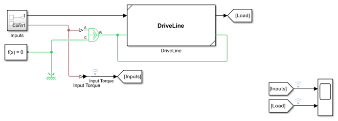
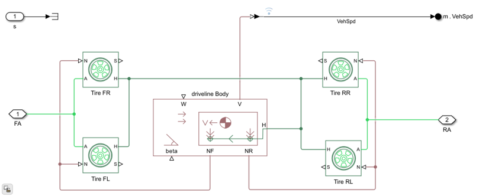
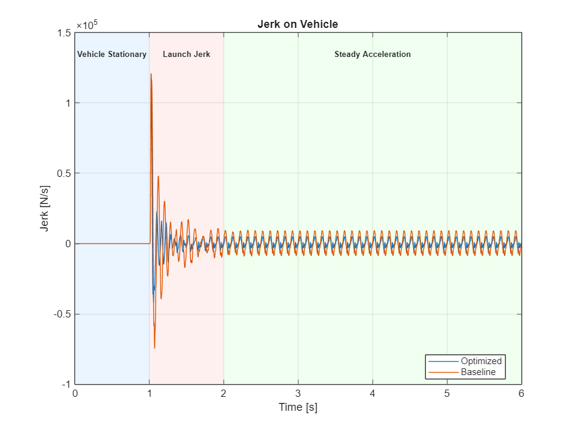

Select Gear Ratio for Electric Vehicle
Workflow — Evaluates the motor and transmission ratio against vehicle duty cycles.
Longitudinal electric-vehicle driveline with optional braking behavior
Component path: Components / Driveline

Vehicle driveline component for the BEV system model. The driveline transmits torque from the front and rear motor drive units to the wheels through axle connections. It includes tire models with slip dynamics and a vehicle body subsystem for longitudinal response. Two fidelity levels are available depending on whether explicit mechanical braking is needed.
Use Driveline for drive-cycle energy and range studies in which regenerative braking supplies the required deceleration abstraction. Select DrivelineWithBraking when friction-brake commands, wheel forces, and blended braking are explicit design variables.
| Model | Description | Use case | Templates | Documentation & files |
|---|---|---|---|---|
| Driveline | Front/rear axle torque, tire slip, and vehicle body dynamics. | Default driveline for all drive-cycle range estimation and battery sizing workflows where mechanical braking is handled by regen only. | VehicleElectric, VehicleElecAux, VehicleElectroThermal | Documentation · Parameters |
| DrivelineWithBraking | Adds integrated mechanical braking on the rear axle. | Vehicle studies requiring blended regenerative and friction braking analysis, or braking-specific controller validation. | VehicleElectric, VehicleElecAux, VehicleElectroThermal | Documentation · Parameters |
Workflow/Vehicle/RangeEstimation/) — The driveline converts motor torque into vehicle motion and captures road load, tire losses, and vehicle speed for range calculation.Workflow/Battery/BatterySizing/) — Vehicle mass is swept to evaluate the impact of different battery pack sizes on range.Workflow/MotorDrive/GearRatioSelect/) — Vehicle road-load conditions determine the motor duty cycle used to compare gear ratios against thermal limits.Workflow/Driveline/DrivelineNVH/) — Flexible-shaft dynamics support frequency order-map generation and launch gear-ratio optimization.
Workflow — Evaluates the motor and transmission ratio against vehicle duty cycles.

NVH workflow — Maps motor-bearing excitation force against rotational speed and order.

NVH workflow — Balances launch jerk and acceleration across three transmission ratios.
Vehicle workflow — Uses road-load behavior in integrated energy analysis.
Both vehicle fidelities provide front and rear axle connections and report vehicle speed. DrivelineWithBraking uses input s for mechanical braking torque; Driveline terminates that input.
| Port / signal | Direction | Description |
|---|---|---|
FA | Conserving | Front axle mechanical rotational connection. |
RA | Conserving | Rear axle mechanical rotational connection. |
s (DrivelineWithBraking) | Input | Mechanical braking torque command. |
m.VehSpd | Output | Longitudinal vehicle speed. |
Verify vehicle dynamics, tire response, and braking behavior under controlled inputs.
Run the maintained Driveline test case before integration.